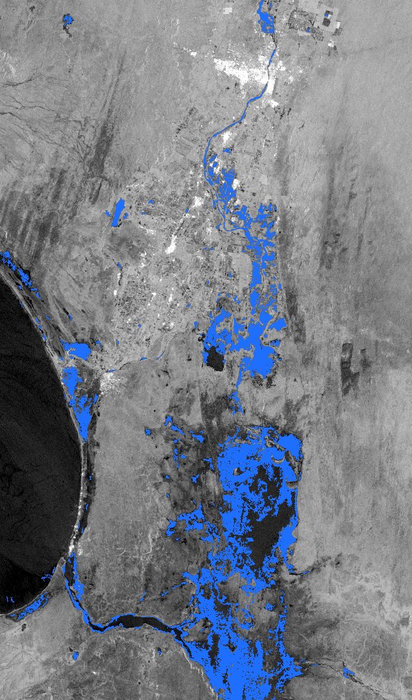
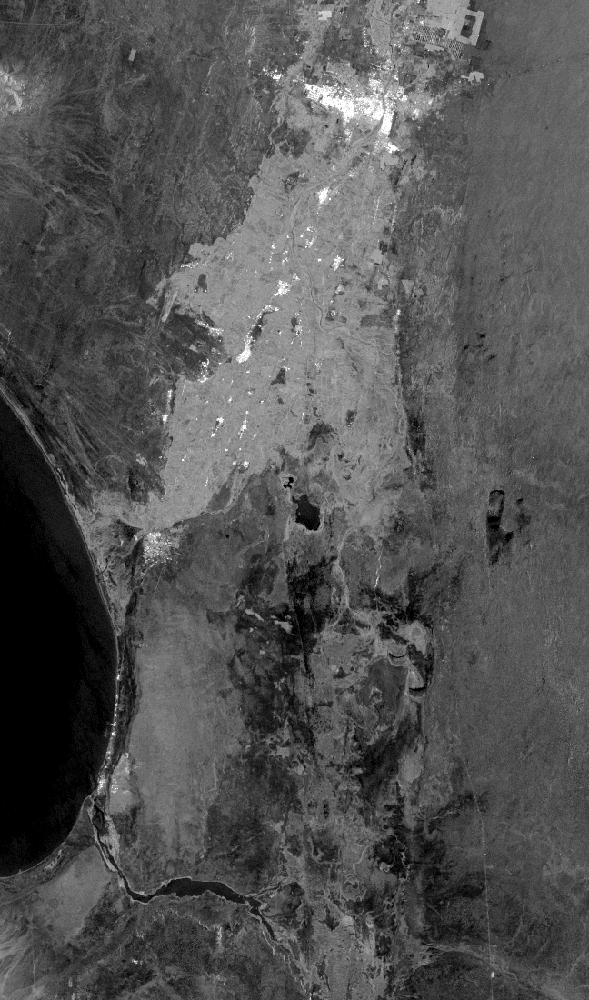

Piura 2017, vista desde el espacio
Arrastra la barra. A la izquierda, Piura en temporada seca (fines de 2016). A la derecha, la misma zona el 1 de abril de 2017, cinco días después de que el río se desbordara en la ciudad. Lo oscuro es agua: el radar del satélite ve a través de las nubes.


Seco · fines de 2016 1 de abril de 2017¿Por qué hay tanta agua al sur, lejos del río?
El agua que se salió en el Bajo Piura no volvió al cauce: corrió por la pendiente del desierto hacia la depresión de Sechura, donde se formó la laguna conocida como La Niña. Por eso la mayor parte de la inundación quedó fuera de la cuenca oficial del río.
Lo que el radar no ve
- Dentro de la ciudad: los edificios rebotan la señal y esconden el agua. Piura sí se inundó, aunque aquí no se vea azul.
- El fondo de algunas lagunas: la arena seca ya se ve oscura antes del evento, así que el cambio no se detecta.
Imágenes: Copernicus Sentinel-1 (ESA), procesadas en Google Earth Engine con detección de cambio contra la línea base seca. Caudal: informe de emergencia del COEN-INDECI del 27-mar-2017. Proyecto abierto enso-floods-peru, hecho con herramientas de Deltares (Países Bajos).